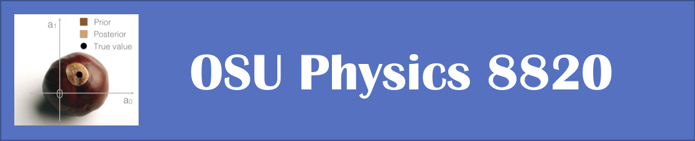

Tests of Jupyter Book features#
Click the .md button under the download icon on the top middle right to see the markdown code for this section. The file theme.css has color assignments and the like. Customize? (See https://jupyterbook.org/advanced/html.html#custom-assets)
colon_fence#
To allow you to use ::: fences for admonitions, in order to make them easier to render in interfaces that do not support MyST.
Important
Note
This text is standard Markdown. We’re using the “colon_fence” extension.
replacements#
Test of “replacements” extension: ®, ® en-dash: – and em-dash: —
Trying “linkify” extension: google.com
substitutions#
Inline: I’m a substitution
Block level:
Note
I’m a substitution
col1 |
col2 |
|---|---|
Note I’m a substitution |
|
definition lists#
- Term 1
Definition
- Term 2
Definition
images#

Now for some text in between.
Fig. 1 This is a caption in Markdown#
HTML admonitions#
This is the title
This is the content of an admonition.
Note
Some content
A title
Paragraph 1
Paragraph 2
Customized admonitions#
Extra credit
An “extra credit” exercise is presented here.
Dropdown answer#
The old hidden fish trick!
Some hidden toggle content!
Maybe this needs to be in an .ipynb file?
Question
The matrix product of 2 rank 2 tensors
Answer
First answer is: \( a_{ij} b_{jk} = c_{ik} \)
Let’s try again here.
Answer
Spread things out a bit.
Click the button to reveal!
Some hidden toggle content!

Different admonitions: note, warning, tip, caution, attention, danger, error, hint, important
Panels#
Controlling the look and feel (here the border):
More dropdowns#
Here’s my dropdown
And here’s my dropdown content
Turning an admonition into a dropdown (see above as well):
Note
The note body will be hidden!
::::{admonition} Question
What is the pdf $p(x)$ if we know **definitely** that $x = x_0$ (i.e., fixed)?
:::{admonition} Answer
:class: dropdown
$p(x) = \delta(x-x_0)\quad$ [Note that $p(x)$ is normalized.]
:::
::::
Footnotes#
You can include footnotes in your book using standard Markdown syntax. This will include a numbered reference to the footnote in-line, and append the footnote to a list of footnotes at the bottom of the page.
To create a footnote, first insert a reference in-line with this syntax (look at the markdown for how this plays out): [1].
You can define [1] anywhere in the page, though its definition will always be placed at the bottom of your built page.
Quotations and epigraphs#
Standard markdown first:
Here is a cool quotation.
From me, Jo the Jovyan
Now with the epigraph admonition. (Epigraphs draw more attention to a quote and highlight its author. You should keep these relatively short so that they don’t take up too much vertical space.)
Here is a cool quotation.
—Jo the Jovyan
Glossaries#
To reference terms in your glossary, use the {term} role. For example, Term one becomes Term one and A second term becomes A second term.